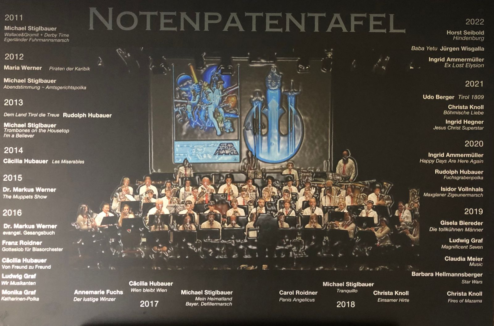

Udo Berger
Der alte Dessauer
Traditionsmarsch mit drei Trompetensoli
Notenpatinnen und Notenpaten sind ein wesentlicher Teil unseres Vereins. Seit 2011 schenken sie uns Musikstücke für das Jahreskonzert oder den Gottesdienst. Wir danken allen, die unser Repertoire auf diese Weise bereichern.
Der alte Dessauer
Traditionsmarsch mit drei Trompetensoli
Queen Medley
Bryan Adams – The Best of Me
Die Notenpaten der Jahre 2011 bis 2022 sind auf unserer Notenpatentafel verewigt. Sie hängt im Foyer des Proberaums.

Du möchtest dem Musikverein ein Musikstück schenken? Melde dich bei uns, um eine Notenpatenschaft zu besprechen.
Notenpatenschaft anfragen